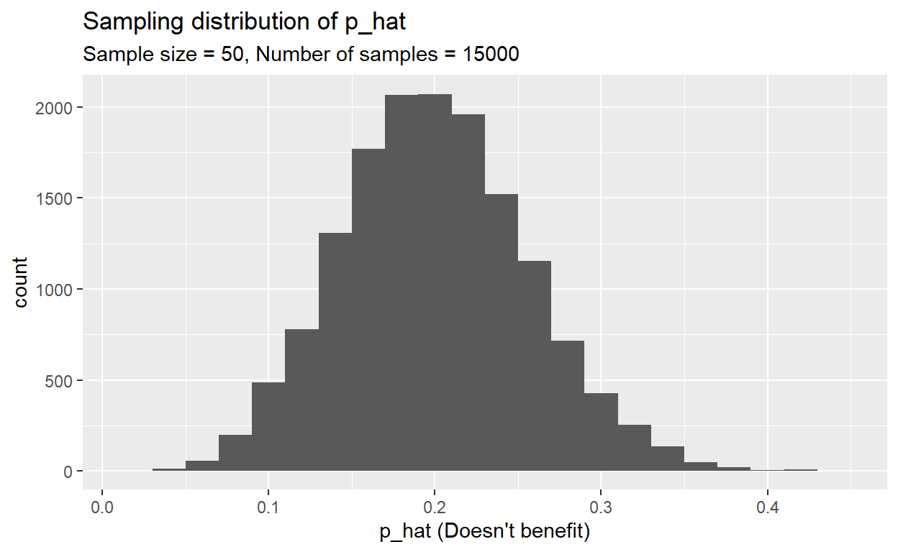

Foundations for statistical inference - Sampling distributions
Please type "Your Name" in the interactive R chunk below
and run it by clicking Run Code hitting
crtl+Enter or cmd+Enter for MAC users.
Some define statistics as the field that focuses on turning information into knowledge. The first step in that process is to summarize and describe the raw information – the data.
In this lab, you will investigate the ways in which the statistics from a random sample of data can serve as point estimates for population parameters. We’re interested in formulating a sampling distribution of our estimate in order to learn about the properties of the estimate, such as its distribution.
Setting a seed: We will take some random samples and build sampling distributions in this lab, which means you should set a seed at the start of your lab. If this concept is new to you, review the lab on probability.
Getting Started
Load R Packages
- In this lab, we will explore and visualize the data using the
tidyversesuite of packages. - The data is found in the
ggplot2package which is part of thetidyversecollection. - We will also use the infer package for resampling.
Let’s load the packages.
library(tidyverse)
library(openintro)
library(infer)The data
A 2019 Gallup report states the following:
The premise that scientific progress benefits people has been embodied in discoveries throughout the ages – from the development of vaccinations to the explosion of technology in the past few decades, resulting in billions of supercomputers now resting in the hands and pockets of people worldwide. Still, not everyone around the world feels science benefits them personally.
The Wellcome Global Monitor finds that 20% of people globally do not believe that the work scientists do benefits people like them. In this lab, you will assume this 20% is a true population proportion and learn about how sample proportions can vary from sample to sample by taking smaller samples from the population. We will first create our population assuming a population size of 100,000. This means 20,000 (20%) of the population think the work scientists do does not benefit them personally and the remaining 80,000 think it does.
global_monitor <- tibble(
scientist_work = c(rep("Benefits", 80000), rep("Doesn't benefit", 20000))
)The name of the data frame is global_monitor and the
name of the variable that contains responses to the question “Do you
believe that the work scientists do benefit people like you?” is
scientist_work.
We can quickly visualize the distribution of these responses using a bar plot.
global_monitor <- tibble(
scientist_work = c(rep("Benefits", 80000), rep("Doesn't benefit", 20000))
)
ggplot(global_monitor, aes(x = scientist_work)) +
geom_bar() +
labs(
x = "", y = "",
title = "Do you believe that the work scientists do benefit people like you?"
) +
coord_flip() We can also obtain summary statistics to confirm we constructed the data frame correctly.
global_monitor <- tibble(
scientist_work = c(rep("Benefits", 80000), rep("Doesn't benefit", 20000)))
global_monitor %>%
count(scientist_work) %>%
mutate(p = n /sum(n))The unknown sampling distribution
In this lab, you have access to the entire population, but this is rarely the case in real life. Gathering information on an entire population is often extremely costly or impossible. Because of this, we often take a sample of the population and use that to understand the properties of the population.
If you are interested in estimating the proportion of people who
don’t think the work scientists do benefits them, you can use the
sample_n command to survey the population.
global_monitor <- tibble(
scientist_work = c(rep("Benefits", 80000), rep("Doesn't benefit", 20000)))
samp1 <- global_monitor %>%
sample_n(50)This command collects a simple random sample of size 50 from the
global_monitor dataset, and assigns the result to
samp1. This is similar to randomly drawing names from a hat
that contains the names of everyone in the population. Working with
these 50 names is considerably simpler than working with all 100,000
people in the population.
- Describe the distribution of responses in this sample. How does it
compare to the distribution of responses in the population.
Hint:
Use set.seed(224), although thesample_nfunction takes a random sample of observations (i.e. rows) from the dataset, you can still refer to the variables in the dataset with the same names. Code you presented earlier for visualizing and summarising the population data will still be useful for the sample, however be careful to not label your proportionpsince you’re now calculating a sample statistic, not a population parameter. You can customize the label of the statistics to indicate that it comes from the sample.
If you’re interested in estimating the proportion of all people who do not believe that the work scientists benefit them, but you do not have access to the population data, your best single guess is the sample proportion.
global_monitor <- tibble(
scientist_work = c(rep("Benefits", 80000), rep("Doesn't benefit", 20000)))
samp1 <- global_monitor %>%
sample_n(50)
samp1 %>%
count(scientist_work) %>%
mutate(p_hat = n /sum(n))
samp1_p_hat <- samp1 %>%
count(scientist_work) %>%
mutate(p_hat = n /sum(n)) %>%
filter(scientist_work == "Doesn't benefit") %>%
pull(p_hat) %>%
round(2)Depending on which 50 people you selected, your estimate could be a bit above or a bit below the true population proportion of **r samp1_p_hat*`**.
In general, though, the sample proportion turns out to be a pretty good estimate of the true population proportion, and you were able to get it by sampling less than 1% of the population.
- Would you expect the sample proportion to match the sample proportion of another student’s sample? Why, or why not?.
- would you expect the proportions to be somewhat different or very different? Ask a student team to confirm your answer.
- Take a second sample, also of size 50, and call it
samp2. How does the sample proportion ofsamp2compare with that ofsamp1? Suppose we took two more samples, one of size 100 and one of size 1000. Which would you think would provide a more accurate estimate of the population proportion?
Not surprisingly, every time you take another random sample, you
might get a different sample proportion. It’s useful to get a sense of
just how much variability you should expect when estimating the
population mean this way. The distribution of sample proportions, called
the sampling distribution (of the proportion), can help you
understand this variability. In this lab, because you have access to the
population, you can build up the sampling distribution for the sample
proportion by repeating the above steps many times. Here, we use R to
take 15,000 different samples of size 50 from the population, calculate
the proportion of responses in each sample, filter for only the
Doesn’t benefit responses, and store each result in a vector
called sample_props50. Note that we specify that
replace = TRUE since sampling distributions are constructed
by sampling with replacement.
global_monitor <- tibble(
scientist_work = c(rep("Benefits", 80000), rep("Doesn't benefit", 20000)))
sample_props50 <- global_monitor %>%
rep_sample_n(size = 50, reps = 15000, replace = TRUE) %>%
count(scientist_work) %>%
mutate(p_hat = n /sum(n)) %>%
filter(scientist_work == "Doesn't benefit")And we can visualize the distribution of these proportions with a histogram.
global_monitor <- tibble(
scientist_work = c(rep("Benefits", 80000), rep("Doesn't benefit", 20000)))
sample_props50 <- global_monitor %>%
rep_sample_n(size = 50, reps = 15000, replace = TRUE) %>%
count(scientist_work) %>%
mutate(p_hat = n /sum(n)) %>%
filter(scientist_work == "Benefit")
ggplot(data = sample_props50, aes(x = p_hat)) +
geom_histogram(binwidth = 0.02) +
labs(
x = "p_hat (Benefit)",
title = "Sampling distribution of p_hat",
subtitle = "Sample size = 50, Number of samples = 15000"
)Next, you will review how this set of code works.
- Given the plot below.

Sample size and the sampling distribution
Mechanics aside, let’s return to the reason we used the
rep_sample_n function: to compute a sampling distribution,
specifically, the sampling distribution of the proportions from samples
of 50 people.
global_monitor <- tibble(
scientist_work = c(rep("Benefits", 80000), rep("Doesn't benefit", 20000)))
sample_props50 <- global_monitor %>%
rep_sample_n(size = 50, reps = 15000, replace = TRUE) %>%
count(scientist_work) %>%
mutate(p_hat = n /sum(n)) %>%
filter(scientist_work == "Doesn't benefit")
ggplot(data = sample_props50, aes(x = p_hat)) +
geom_histogram(binwidth = 0.02, col="black")The sampling distribution that you computed tells you much about estimating the true proportion of people who think that the work scientists do doesn’t benefit them. Because the sample proportion is an unbiased estimator, the sampling distribution is centered at the true population proportion, and the spread of the distribution indicates how much variability is incurred by sampling only 50 people at a time from the population.
In the remainder of this section, you will work on getting a sense of the effect that sample size has on your sampling distribution.
- Use the app in this link to create sampling distributions of proportions of Doesn’t benefit from samples of size 10, 50, and 100. Use 5,000 simulations. What does each observation in the sampling distribution represent? How does the mean, standard error, and shape of the sampling distribution change as the sample size increases? How (if at all) do these values change if you increase the number of simulations? (You do not need to include plots in your answer.)
Submit
NCAT Blackboard
Resources for learning R and working in RStudio
That was a short introduction to Data Manipulation and Visualization
in the tidyverse which is a suite of R packages.
The book R For Data Science by Grolemund and Wickham is a great resource for data analysis in R with the tidyverse. If you are Goggling for R code, make sure to also include these package names in your search query. For example, instead of Goggling “scatterplot in R”, Goggle “scatterplot in R with the tidyverse”.
These may come in handy throughout the semester:
Note that some of the code on these cheatsheets may be too advanced for this course. However the majority of it will become useful throughout the semester.

This
work is licensed under a
Creative
Commons Attribution-ShareAlike 4.0 International License.